TOOLKIT: Blender 3D, Unity, Twine
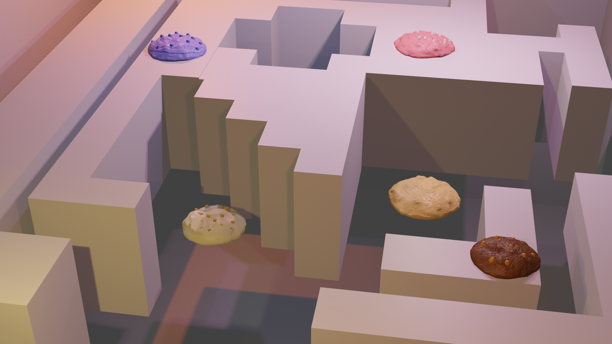
In our daily lives, we often find ourselves reminiscing on past experiences, piecing together how time has shaped our journeys. Similarly, in the digital world, browser cookies—those tiny text files—collect fragments of our data over time. On their own, these fragments may seem insignificant, but together, they form a digital representation of who we are.
Warped Memories draws a poetic parallel between human memories and browser cookies. It invites participants into a speculative world where memories are accessed through a "data store." At this store, personal memories are accessed through uniquely flavored cookies, each representing a different emotion or experience from the individual's life.
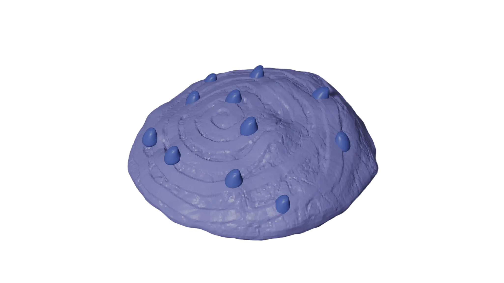
Exploring the intertwining concepts of data transparency, data monopoly, digital identities, and memory ownership. It examines how technologies we use daily harvest our data, shaping and manipulating behaviors under the guise of convenience. In an era of digital colonialism, a few powerful entities govern systems that lack transparency.
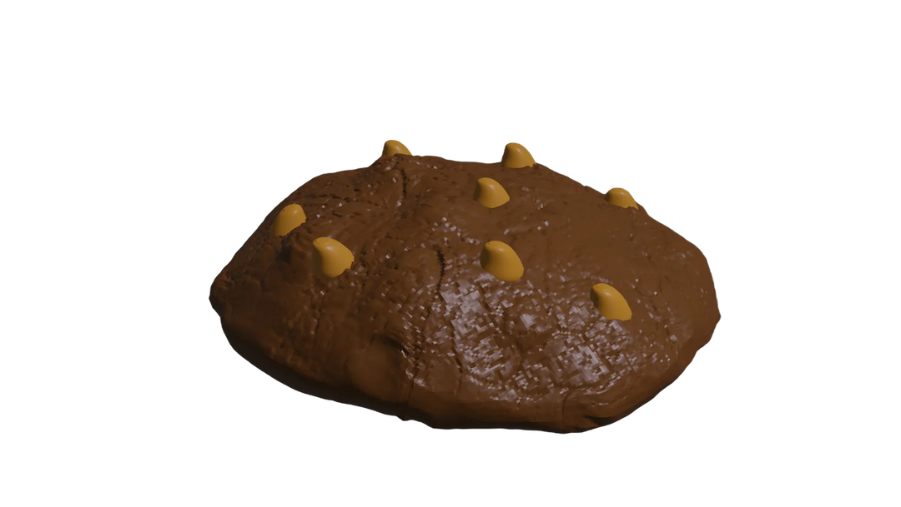
As people visit the data store, they discover that each cookie reveals a specific incident from their past. With every bite, the flavor deepens, evoking the feelings tied to that memory—such as bittersweet moments, fleeting happiness, or deep sorrow. These cookies are not just baked but encoded, based on the individual's lived experiences and emotional archives. These memories can only be accessed by eating the cookie. Accessing memories becomes a sensory journey towards finding oneself. Visitors scramble to piece together their lived experiences by consuming as many cookies as possible.
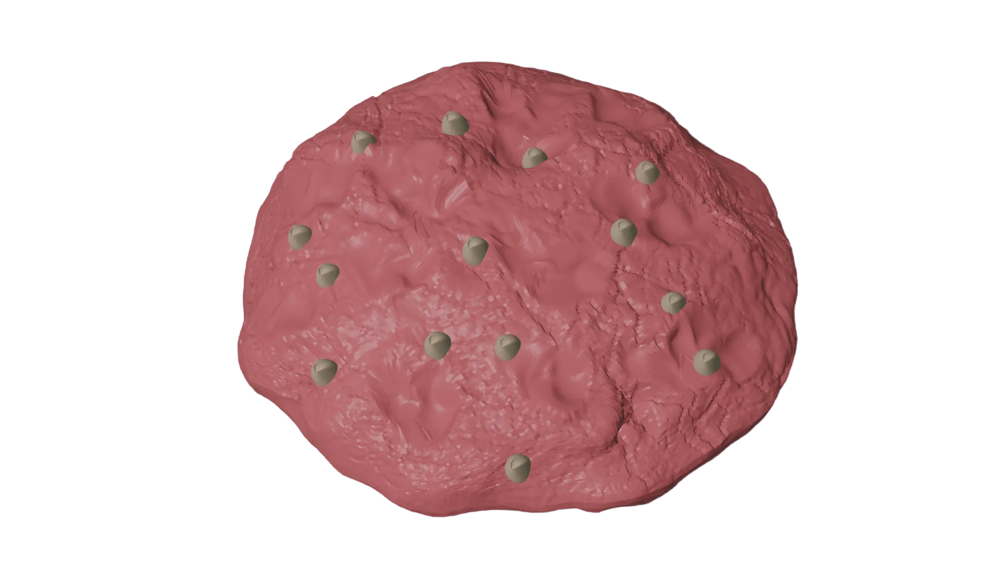
When you first enter the store, the sound of static fills the air, interrupted by a voice over the speaker: "Welcome to the Data Store—a place where every byte of your life is preserved in the form of cookies."
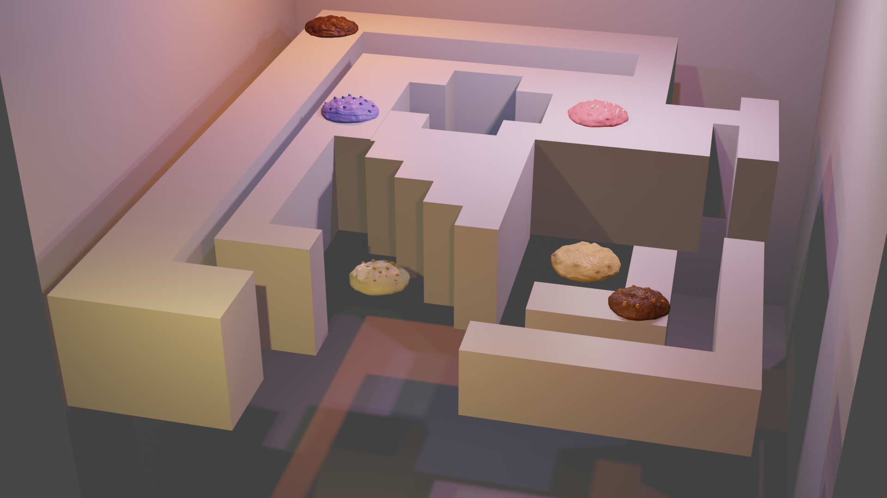
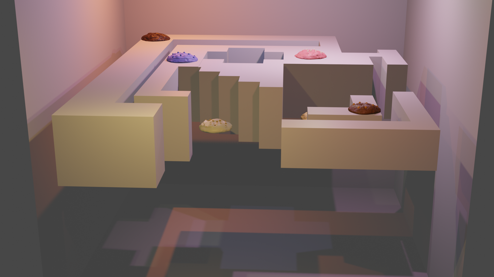
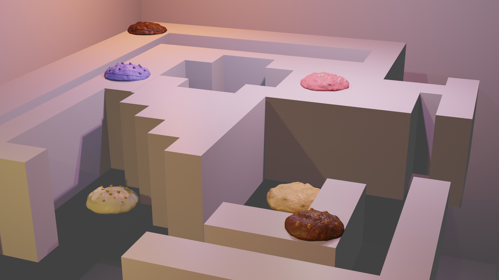
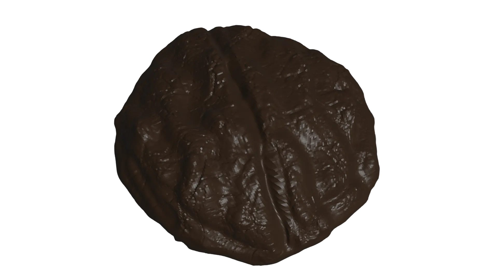
Today, you're handed a "Dark Hollow Coffee" cookie. It's complicated to retrieve, suggesting it's tied to an old, distant memory. The more faded a memory becomes, the more challenging it is to navigate the maze to reach its cookie. As you take your first bite, a wave of sadness washes over you. The cookie brings back memories of people you've lost touch with—those you once believed would be part of your life forever.
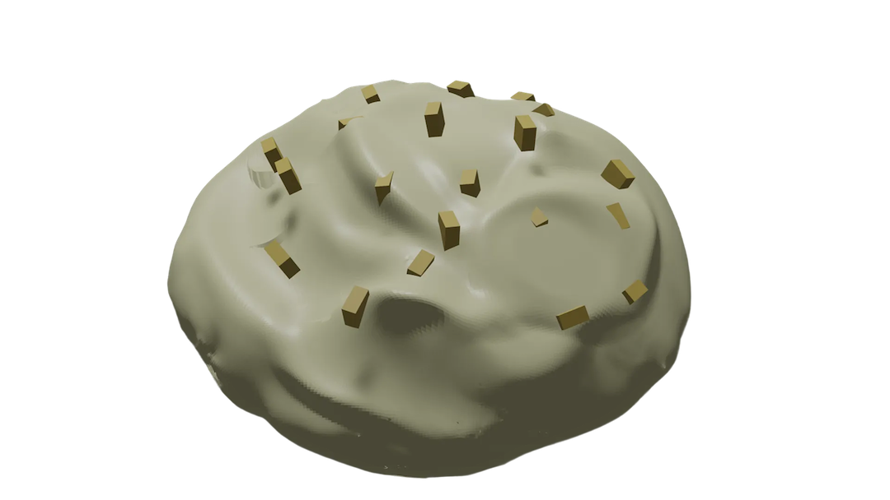
You try another cookie—it's "Lemon Iced" flavored. Its refreshing flavor carries you back to a joyful summer from just last year. You feel a desperate urge to keep all the cookies, to preserve every memory they hold. But you can't. The data store controls access to your memories, wielding a monopoly over what was once yours. Resigned, you savor the last cookie and leave, aware of the control this store has over your life.
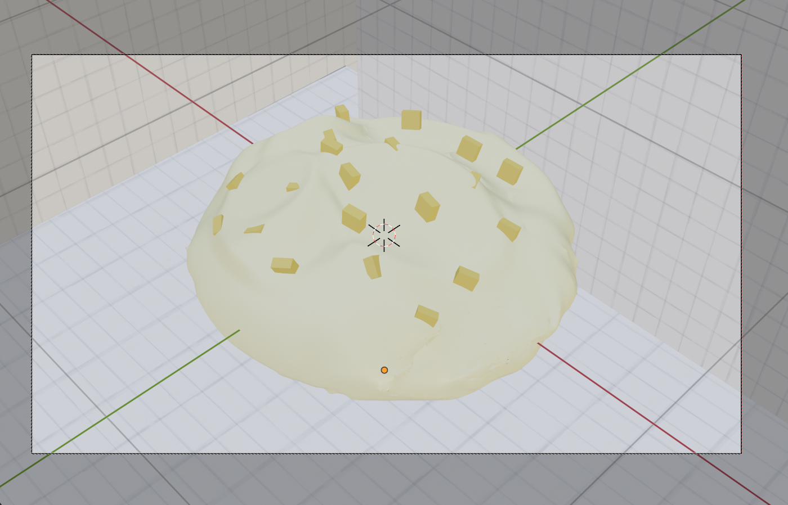
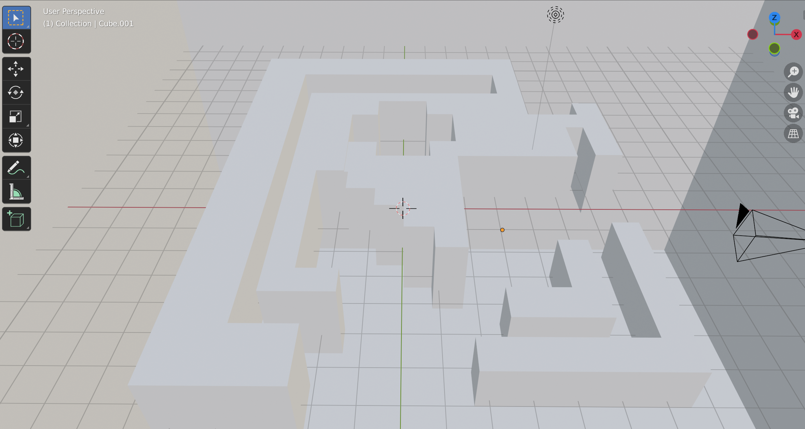
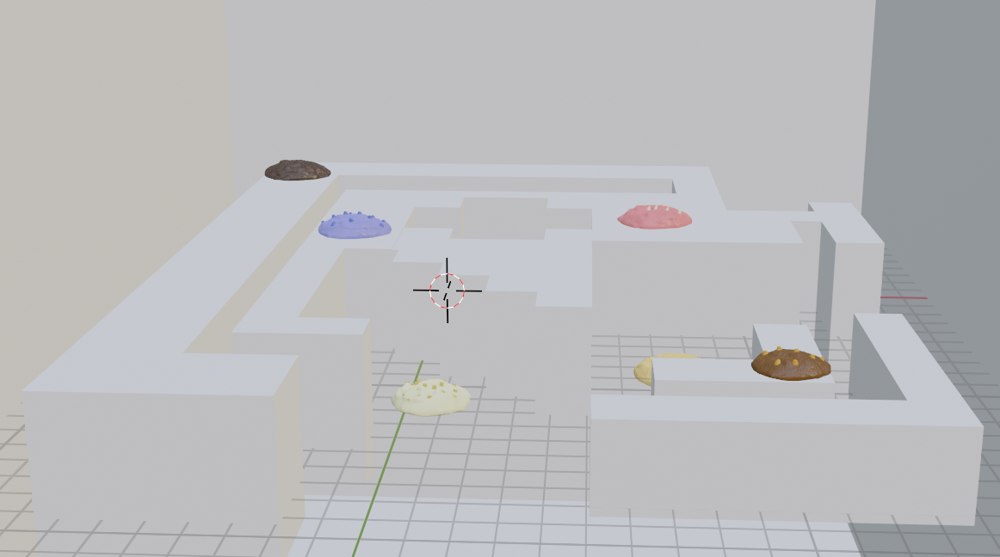
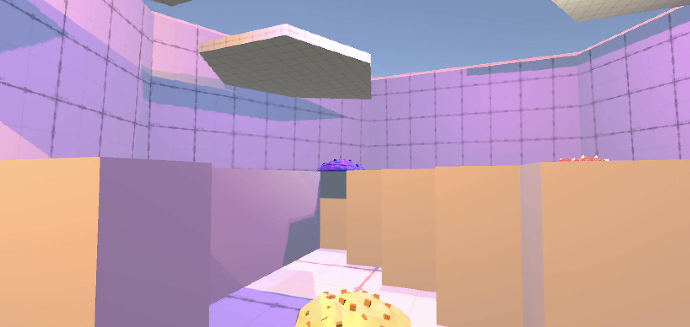
Visitors are left with a pressing questions how does the data store possess their memories? And more importantly, how can they reclaim what is rightfully theirs?
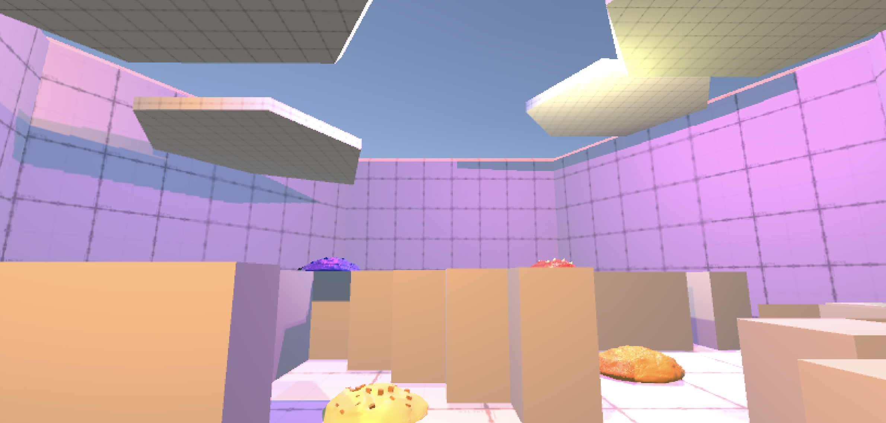
Previous Project